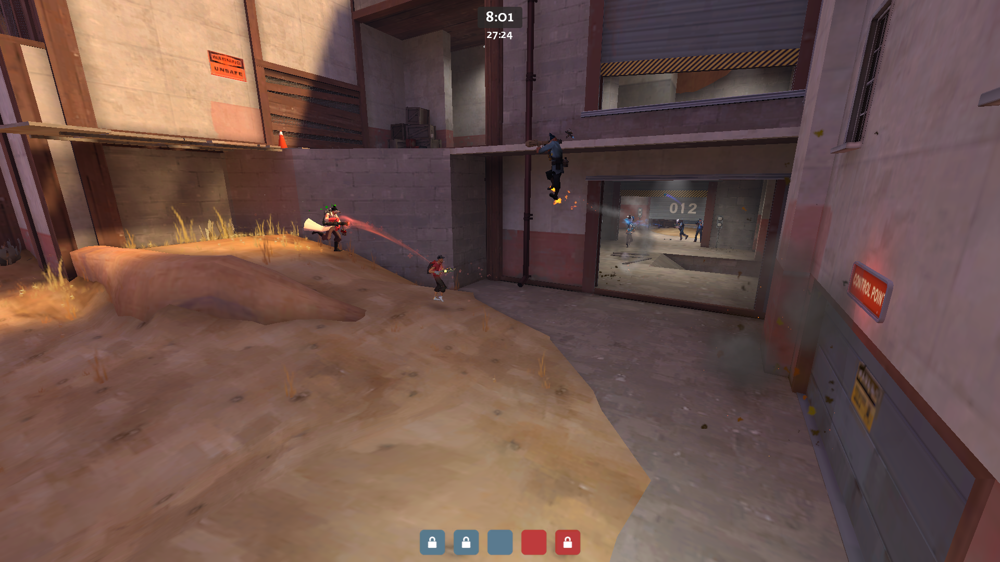

Competitive Games in Team Fortress 2
Formats
In competitive TF2, there two main formats for competitive. Nine vs nine, also called highlander, and six vs six. In highlander, there is a class restriction of one, so each team has one player for each class. Six vs six has no class restrictions, but teams generally run two scouts, two soldiers, a demoman, and a medic. Other classes are generally only played in niche situations.
Highlander Game Types
In highlander, the main game types are payload, king of the hill, and attack/defend. In highlander payload, each team is given a chance to play both defense and offense. The team that pushes the bomb to last the fastest wins. In king of the hill, either team must control the central point for three minutes to win a round. The first team to get four rounds wins. In attack/defend, each team gets a chance to play offense and defense. The offense team has to capture a series of control points, and the defense has to stop them. The team that captures all points the fastest wins.
Six v Six Game Types
In 6's, there are only two game types played, and those are king of the hill and five control points. For king of the hill, it follows the same rules as it does in highlander. In five control points, both teams start the game with two points under their control. Once the round starts, the teams compete for the middle point, and to win they have to capture the enemy team's last point.
Where To Play
Like most other competitive games, Team Fortress 2 features a built in competitive queuing system. This queue, however, only supports six vs six matches. If you wanted to play highlander without joining a team in a league, you would have to use TF2Center. TF2Center is another third-party matchmaking system, and it is the only one that supports highlander. For league play, there are two main organizations that host competitive TF2. RGL is a third-party organization that allows TF2 players to compete in leagues of varying skill levels for cash prizes. UGC offers the same service, but it is free to use and does not offer cash prizes.